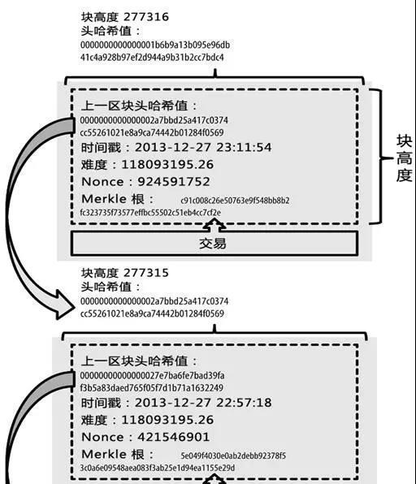
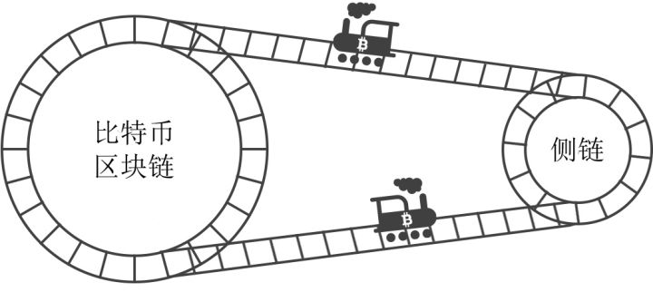
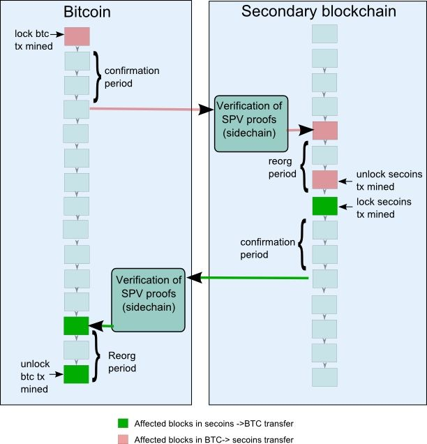

区块链2-进阶概念
一、简单支付验证（SPV）
简单支付验证（Simplified Payment Verification，简称SPV）是一种无须维护完整的区块链信息，只需要保存所有的区块头部信息即可进行支付验证的技术。该技术可以大大节省区块链支付验证用户的存储空间，减轻用户存储负担，降低区块链未来交易量剧增而给用户带来的压力。以比特币系统为例，节点只需保存所有区块头信息，即可进行交易支付验证。节点虽然不能独立验证交易，但能够从区块链其他节点获取交易验证的必要信息，从而完成交易支付验证，同时还可以得到整个区块链网络对交易的确认数。
要理解SPV的概念，首先需要理解如下两类概念的区别。
- 一是SPV与轻钱包（或瘦客户端）的区别。轻钱包指的是节点本地只保存与其自身相关的交易数据（尤其是可支配交易数据），但并不保存完整区块链信息的技术。SPV的目标是验证某个支付是否真实存在，并得到了多少个确认。比如爱丽丝（Alice）收到来自鲍伯（Bob）的一个通知，鲍伯声称已经从其账户中汇款一定数额的钱给了爱丽丝。如何快速验证该支付的真实性，是SPV的工作目标。轻钱包或瘦客户端的目标不仅是支付验证，而且是用于管理节点自身的资产收入、支付等信息。比如爱丽丝使用轻钱包或瘦客户端管理自身在区块链的收入信息、支出信息，在本地只保存与爱丽丝自身相关的交易数据，尤其是可支配交易数据。轻钱包与SPV的最大区别是，轻钱包节点仍需下载每个新区块的全部数据并进行解析，获取并本地存储与自身相关的交易数据，只是无须在本地保存全部数据而已。而SPV节点不需要下载新区块的全部数据，只需要保存区块头部信息即可。虽然轻钱包或瘦客户端中部分借鉴了SPV的理念，但和SPV是完全不同的。
- 二是区块链支付验证与区块链交易验证的区别。SPV指的是区块链支付验证，而不是区块链交易验证。这两种验证方式存在很大的区别。区块链交易验证的过程比较复杂，包括账户余额验证、双重支付判断等，通常由保存区块链完整信息的区块链验证节点来完成。而支付验证的过程比较简单，只是判断该笔支付交易是否已经得到了区块链节点共识验证，并得到了多少的确认数即可。还是以比特币系统为例，用户爱丽丝收到来自鲍伯的通知，鲍伯声称已经从其账户中汇款一定数额的钱给爱丽丝。爱丽丝进行交易验证的过程如下：首先，爱丽丝遍历完整的区块链账本，在区块链账本的交易中保存了鲍伯的历史交易信息（包括鲍伯的汇款账户、鲍伯的签名、历史收款人的地址以及汇款金额信息等），查询鲍伯的账户，就可以判断鲍伯提供的账户是否有足够的余额，如果余额不足则交易验证失败；其次，爱丽丝要根据区块链账本判断鲍伯是否已经支出了这个账户上的钱给别人，即是否存在双重支付问题，如果存在则交易验证失败；最后，判断鲍伯是否拥有其提供账户的支配权，如果判断失败则交易验证失败。而如果爱丽丝只是进行支付验证，则过程简单得多：通过SPV，爱丽丝可以进行支付快速验证，即检查此项支付交易是否已经被收录存储于区块链中，并得到了多少个确认数，就可以判断支付验证的合法性。详细的技术原理如下。
（一）SPV的技术原理
在区块链中，区块信息主要包括区块大小、区块头、交易数量和交易信息四部分内容。其中，区块头大小为固定字节，比如比特币中区块头的大小始终为80字节。区块头中一般包括如下信息：前一区块（也称父区块）的哈希值、区块中交易默克尔树的根哈希值、时间戳等。以比特币为例，其区块头的数据结构如表3-1所示。

通过区块的哈希值，可以识别出区块链中的对应区块。区块前后有序链接，每一个区块都可以通过其区块头的“前一区块的哈希值”字段引用前一区块。这样把每个区块均链接到各自前一区块的哈希值序列就创建了一条一直可以追溯到第一个区块（创世区块）的链条。前一区块的哈希值，可以确保区块链所记录的交易次序。默克尔树的根哈希值则可以确保收录到区块中的所有交易的真实性。
区块链节点利用SPV对支付进行验证的工作原理如下：
- 计算待验证支付的交易哈希值；
- 节点从区块链网络上获取并存储最长链的所有区块头至本地；
- 节点从区块链获取待验证支付对应的默克尔树哈希认证路径；
- 根据哈希认证路径，计算默克尔树的根哈希值，将计算结果与本地区块头中的默克尔树的根哈希值进行比较，定位到包含待验证支付的区块；
- 验证该区块的区块头是否已经包含在已知最长链中，如果包含则证明支付真实有效；
- 根据该区块头所处的位置，确定该支付已经得到的确认数量。
上述方法可以减轻用户的负担。以比特币为例，无论未来的交易量多大，区块头的大小始终只有80字节，按照每小时6个的区块生成速度，每年产出52560个区块。当只保存区块头时，每年新增存储需求约为4兆字节，100年后累计的存储需求仅为400兆字节，即使用户使用的是最低端的设备，正常情况下也完全能够负载。
SPV的工作原理中，最为关键和复杂的是步骤③，节点从区块链获取待验证支付对应的默克尔树哈希认证路径的过程。例如，一个区块链节点想要知道其钱包中某个比特币地址即将到达的某笔支付，该节点会在节点间的通信链接上建立起布鲁姆过滤器，限制只接受含有目标比特币地址的交易。当节点探测到某交易符合布鲁姆过滤器的要求时，将以默克尔区块消息的形式发送该区块。默克尔区块消息包含区块头和一条连接目标交易与默克尔树根的默克尔哈希认证路径。默克尔树哈希认证路径是验证待验证支付是否存在于默克尔树的关键条件，该认证路径由默克尔树所有路径中节点的哈希值共同构成，自下而上进行哈希计算。节点能够使用该路径找到与该交易相关的区块，进而验证对应区块中该交易的有无。
（二）SPV的功能扩展
虽然SPV可以高效地进行支付验证，但对于节点当前状态（账户余额、账户信息甚至合约状态等）均无法给出证明。SPV能否扩展并更进一步呢？以太坊对SPV的功能进行了扩展：每一个区块头，并非只包含一棵默克尔树，而是包含了三棵默克尔树，分别对应了三种对象——默克尔交易树、默克尔收据树和默克尔状态树。其中默克尔收据树和默克尔状态树是比特币等现有区块链系统没有的。默克尔收据树是由展示每一笔交易影响的数据条构成的默克尔树。而在默克尔状态树中，则保存账户信息、账户余额等信息。三棵默克尔树的功能分工如下。
- 默克尔交易树：保存交易信息，用于验证交易是否真实包含于区块链中。
- 默克尔收据树：保存某个地址的历史事件实例，比如一个交易是否成功执行、一个众筹合约是否完成了目标等。
- 默克尔状态树：保存了账户名称、账户余额等信息。
基于上述三棵树，以太坊不仅可以实现SPV的支付验证，而且可以快速验证账户是否存在、了解账户余额甚至快速判断交易是否执行成功等信息，实现了良好的SPV扩展。
（三）SPV面临的问题
SPV面临的第一个是问题是SPV节点与区块链系统去中心化程度似乎存在一定的矛盾。随着SPV节点数量的增多，那么区块链参与完整验证的节点数量就会减少。然而，SPV却不能完全独立构成区块链。由于SPV节点没有存储完整的区块链信息，SPV的实现离不开存储区块链完整信息的节点或系统的辅助。
SPV面临的第二个问题是交易可锻性攻击 [19] 。由于SPV实现中一个关键步骤是根据支付哈希值定位其在区块中的位置，而该过程可能遭遇交易可锻性攻击。比如比特币系统中，交易可锻性攻击体现在交易ID（账号）可被伪造，而交易ID可被伪造的原因是比特币签名算法不够完善。以比特币为例，交易可锻性攻击的过程如下：在比特币的交易中，第三方交易系统会将交易发送方、接受方、交易金额等数据作为一个交易发送到比特币网络中，发送之前会对这条交易信息进行加密和签名，接着根据生成的签名最终获得一个哈希值，这个哈希值作为交易ID返回给提现的用户。一次交易请求过后，用户接收到的仅有一个交易ID，根据这个交易ID可以查看交易是否成功。当交易发送到比特币网络中后，网络中的各个节点会根据之前生成的签名来验证交易的真实性。问题就出在签名算法上：椭圆曲线数字签名ECDSA这个算法的一个问题是，修改签名的某个字节能够使签名依然校验成功，这样伪造签名之后交易依然能够成功进行。由于交易ID是根据签名生成的，而伪造之后的签名会生成一个完全不同的交易ID，第三方判断到两个ID不同便会确定当前交易失败，而事实上交易已经成功了。这时如果用户发现交易提示失败，可以再次发起交易，第三方交易系统一看之前交易确实失败了，那就会再进行一次交易。这时用户的比特币钱包里就会多收到一份比特币，也就造成了第三方交易平台资金损失。交易的可锻性体现在虽然交易签名被“锻造过”（即修改伪造过），但最终的交易依然有效。上述攻击对于SPV是有效的，因为在交易可锻性攻击场景中，伪造的交易和正常的交易都在区块链网络中，如果伪造的交易先被处理，那么攻击就成功。从而，SPV支付在区块链中的位置定位过程可能无法完成或出现错误，最终影响支付验证的进程和准确性。
有人提出可以通过改进SPV的工作流程来提升攻击防范的有效性，比如不再仅根据哈希值来判断支付的状态，而是使用双因素或者多因素验证，包括账户余额、支付信息追踪等来综合判断支付是否真正成功，但这会增加SPV的复杂度。如何更加有效地解决SPV面临的问题还值得进一步研究。
二、侧链
（一）侧链的起源
侧链（sidechains）实质上不是特指某个区块链，而是指遵守侧链协议的所有区块链，该词是相对于比特币主链来说的。侧链协议是指可以让比特币安全地从比特币主链转移到其他区块链，又可以从其他区块链安全地返回比特币主链的一种协议。
显然，只需符合侧链协议，所有现存的区块链，如以太坊、莱特币、暗网币等竞争区块链都可以成为侧链。元素链（Elements）就是这样一种侧链。所不同的是，它是由BlockStream公司，即提出侧链协议的公司开发的一个侧链的参考实现。
侧链协议具有重大意义。它意味着比特币不仅可以在比特币区块链上流通，还可以在其他区块链上流通，其应用范围和应用前景会更加广泛；有创意的人们会研发出各种各样的应用以侧链协议与比特币主链对接，使得比特币这种基准自由货币的地位更加牢固。
侧链协议的产生有以下几个原因。
- 应对其他区块链的创新威胁
以太坊（Ethereum）区块链、比特股（Bitshares）区块链后来居上，对比特币区块链产生相当大的威胁。智能合约和各种去中心化应用在以上两个区块链上兴起，受到人们的欢迎。而基于比特币的应用则因为开发难度大，项目不多。 - 比特币核心开发组不欢迎附生链
比特币区块链也有合约币（Counterparty）、万事达币（Mastercoin）和彩色币（ColoredCoin）等附生链，但是比特币核心开发组并不欢迎它们，觉得它们降低了比特币区块链的安全性。他们曾经一度把OP_RETURN的数据区减少到40字节，逼迫合约币开发团队改用其他方式在比特币交易中附带数据。 - BlockStream商业化考虑
2014年7月以太坊众筹时，获得了价值1.4亿元人民币的比特币，还有20%的以太币，开发团队获得了巨大的回报。但是比特币核心开发组并没有因为他们的辛勤工作获得可观回报，因而他们成立了BlockStream，拟实现商业化价值。
基于以上三个原因，提出侧链协议、把比特币转出比特币区块链、另行开发二代区块链，这样的选择既能保证比特币区块链的安全，又能应对二代币的冲击，还能针对不同应用场景实现商业化，因而成了BlockStream的必然选择。
（二）侧链协议
侧链协议的目的是实现双向锚定（Two-way Peg），使比特币可以在主链和侧链中互转

比特币主链与侧链关系图

双向锚定示意图
双向锚定分为以下几个阶段
- 发送锁定交易，把比特币锁定在主链上
由比特币持有者操作，发送一个特殊交易，把比特币锁定在区块链上。 - 等待确认期
确认期的作用是等待锁定交易被更多区块确认，可防止假冒锁定交易和拒绝服务攻击，等待时间是1~2天。 - 在侧链上赎回比特币
确认期结束后，用户在侧链上创建一个交易花掉锁定交易的输出，并且提供一个SPV工作量证明，输出到自己在侧链上的地址中。该交易称为赎回交易，SPV工作量证明是指赎回交易所在区块的工作量证明。 - 等待一个竞争期
竞争期的作用是防止双重支付。在此期间，①赎回交易不会被打包到区块；②新传输到侧链的比特币不能使用；③如果有工作量更大的工作证明出现，即该赎回交易包括了比特币主链更大难度的SPV证明，则上一个赎回交易将被替换。
竞争期结束后，该赎回交易将被打包到区块中，用户可以使用自己的比特币。
从侧链转比特币到主链的过程也是如此。这就是侧链双向锚定协议。
（三）元素链
元素链是BlockStream实现的一个参考侧链，Alpha（阿尔发）版于2015年7月推出。元素链Alpha旨在演示技术并且提供测试环境，目前还未开发完成。作为一个与比特币测试网络相对接的侧链，元素链Alpha有可能被其他技术取代。
元素链Alpha是比特币测试链的一个侧链。它依赖可审计的联合签名者来管理传输到侧链的测试币（参见确定性锚定特性），并且以此来产生签名区块（参见签名区块特性）。这样做能快速探索侧链实施的可能性，考虑如何使用不同的安全措施。在未来版本中，升级协议接口以完全支持去中心化的侧链联合挖矿，最终达到完全双向锚定的目标。
元素链所包括的技术如下。
- 私密交易
元素链中最具创新意义的特性莫过于私密交易。私密交易中的金额仅有该交易的参与者知道（或者参与者指定的人），元素链以密码学算法保证不会多花币。比特币用地址来保证隐私，同时公开交易让别人验证；元素链在保护个人隐私上更进一步，隐藏了交易金额。金额隐藏的具体技术见下文。
私密交易最明显的一点是引入了一种新地址类型，称为私密地址。私密地址含了一个盲化因子，比普通比特币地址更长，这种地址在元素链Alpha版本中是默认地址。 - 隔离见证
Alpha版的交易中，签名从交易中分离出来。此举完全消除了任何已知形式的交易可塑性的威胁，并且允许有效的区块链剪枝。
在比特币中，交易包含转账信息（未花费交易集、地址和金额）和用于证明交易合法性的签名；对于隔离见证来说，交易ID仅由转账信息生成，区块中包含签名。这样做有如下好处：- 比特币有一些“正常化交易ID”的建议，隔离见证包含了这些建议。因为正常化交易ID机制在可塑性的输入后还要重写所依赖的交易，对高层协议如闪电网络来说是必要基础。
- 交易ID不覆盖签名，以比BIP62更好的方式，避免了交易可塑性的所有形式，而后可以安全地使用更大尺寸的多语句智能合同。
- 具有更有效提供SPV证明（用于轻钱包）的潜力，因为签名可以从交易中被省略而不破坏默克尔树结构。节点无须存贮或验证签名，可以把签名从磁盘中删除或无须在网络上传输它，以大幅度减少区块链存储容量和宽带要求。但在Alpha版本中，证明数据比比特币签名更占空间，因为还包含了大段的输出金额证明（因为使用了私密交易，隐藏了金额，因而要使用密码学证明以防止多花）。
- 相对锁定时间
为序列号赋予了新的意义，使已签名交易被确认后，其输入在一段特定时间内保持无效，目的是支持交易替换功能。
比特币每个交易都有个序列号，初始想法是相比低序列号，最高序列号应该最占优势，矿工应该更喜欢它，但这个想法从未真正实现。在假设矿工利益最大化的前提下，为了使得交易替换机制得以加强，新增一个操作码CHECKSEQUENCEVERIFY，用于比特币脚本检查序列号限制。
相对锁定时间与常规锁定时间用途一致，如时间锁定的担保服务等。但所指的“相对”会使以区块链为媒介的应用更有意思。例如双向锚定阶段可描述为以交易开始的一个相对锁定时间条件，该交易声明了赎回证据。 - Schnorr签名验证
元素链未使用ECDSA签名方案，而使用了同一曲线上的Schnorr签名方案。其好处如下。- 更有效的n/n阈值签名。多个Schnorr签名可以被合成一个签名，该签名对公钥的总和来说是有效的，所以任意大的n/n多签名只需用一个合签名就可以完成，同时可以被一个CHECKSIG操作所验证。
- 更小的签名容量（64字节，而非71~72字节），没有DER编码问题。潜在支持批量验证（同时验证32个签名达到最高2倍加速），这需要知道R.y坐标（ECDSA忽略这个参数）和脚本级别，确保所有签名验证错误导致脚本运行错误（比如所有CHECKSIG操作与CHECKSIGVERIFY类似），以便提供更强的安全证明。
- 能证明没有固有的签名可塑性问题。ECDSA有可塑性问题，并且不知道是否存在其他形式的可塑性问题。注意，分离证据使得签名可塑性不会导致交易可塑性。
- 比ECDSA的签名和验证速度更快一点。
- 新操作码
元素链Alpha版本新增几个新脚本操作码。- 被禁用的操作码。比特币以前支持许多操作码，一些操作码在2010年因为安全考虑被禁用，需要硬分叉才能重新启用。Alpha版本重新启用了一些被禁用但是安全的操作码，如字符串连接和字串操作码，整数位移码和几个位操作码。
- DETERMINISTICRANDOM操作码：根据种子在一个范围内产生一个随机数。
- CHECKSIGFROMSTACK操作码：验证堆栈中对消息的签名，而不是验证对交易本身的签名。
这些新操作码有一些使用场景，包括双花保护债券、彩票、允许1/N多签名的默克尔树结构（N可为成千上万）、概率支付等。
- 金额隐藏技术
关于区块链业务分析
区块链的业务分析跟传统的数据库系统的业务分析，差别还是很大的，总结几个重要的方面：
- 网络架构。
传统的系统架构大多是BS或CS的，简单说就是“一台服务器+多个终端”。区块链的网络架构，首先是分布式架构，也就是“多个服务器+多个终端（包括既是服务同时又是终端）”，还有“内涵”和“外延”的区别，有“完全节点”和“SPV”（Simplified Payment Verification）的区别。另外，节点部署的地理位置和网络延迟速度也需要考虑。 - 数据架构。
主要关注数据与业务的交互关系，比如数据存储和数据流。在传统的数据库系统中，业务逻辑可以放在代码中，也可以放在数据库的存储过程中实现。在区块链系统中，需要设计，业务逻辑是在链上实现还是在更上面的业务层实现。（在链上实现的逻辑就叫智能合约） - 权限架构。
区块链本身是没有权限的（或者说权限是统一的），而权限管理是应用系统的基础核心功能。在区块链的业务分析中，我们需要明确，权限是如何划分的？在去中心化的系统中，谁有权力给其他人设定权限？ - 交易规则设计。也叫共识机制设计。
我们需要在IT规划时明确，区块链系统中哪些交易是合法的、被接受的，哪些是被拒绝的；不同操作者发起的交易之间存在互相依赖的关系是什么？比如A向B发起一个交易，B又向C发起一个交易。这种情况B的交易就依赖于A的交易，如果不验证A交易的合法性，也就无法验证B交易的合法性。这种关于交易规则的设计，与传统的数据库中的规则相比要更复杂。 - 交易仲裁者的选择。
交易仲裁在传统数据库系统中是没有的，但是在区块链系统中却是核心的，因为分布式系统稳定运行的基本条件，就是不能出现分歧，而仲裁者的首要任务就是消除分歧。在区块链业务分析时，需要明确哪些节点（或用户）充当仲裁者的角色？它们仲裁的内容和标准是什么？
仲裁者跟中介的一个本质区别是，仲裁者对数据操作的权限要小得多，他们不能虚假交易或者违反规则修改数据内容。在金融系统案例中，仲裁者不能花别人的钱，也不能改变资产的总数量。 - 区块链资产的锚定。
在应用系统中，数据肯定要代表现实生活中的某一种资产。在传统数据库系统中，谁拥有这个系统，谁能控制数据库，谁就对资产锚定负责。在区块链系统中，可能存在多个法律主体、多种资产、甚至所有人对数据都有修改的能力，如果不提前做好资产的锚定，很容易出现法律问题。